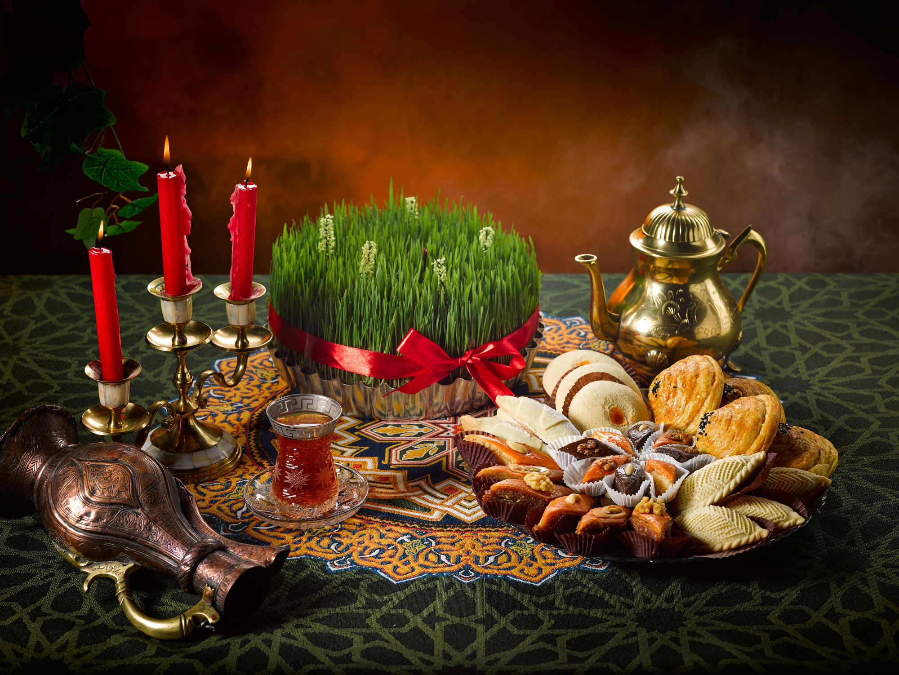
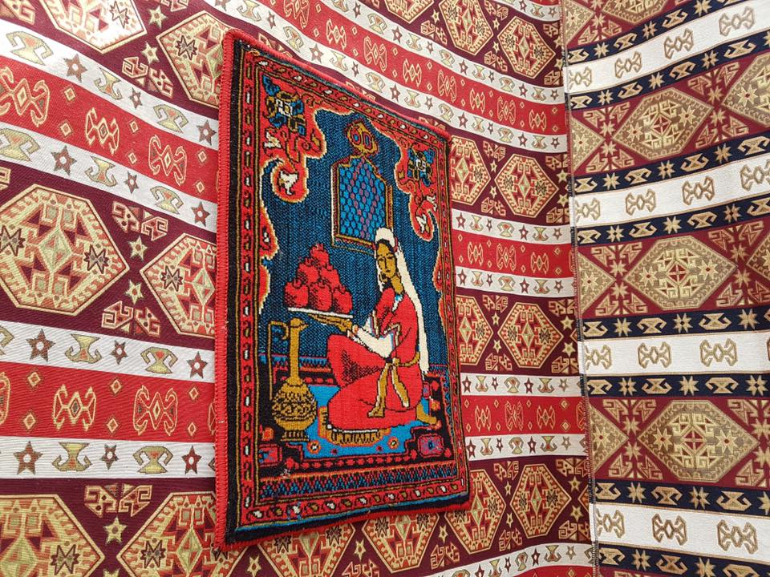

Про Традицию
Особое значение для азербайджанцев играет чай. В любом азербайджанском доме гостю первым делом предлагают чай. Всегда с чая начинается застолье, им же оно и заканчивается. Национальной посудой для питья чая является «армуду» стакан, который по форме напоминает грушу (по другим источникам классическую фигуру восточной женщины)[3]. Подача чая гостям-одна из древних традиций Азербайджана. Азербайджанский народ, как правило, предпочитает макать в чай кусочек сахара, а затем кусочек и потягивать чай, вместо того чтобы добавлять в него сахар. Символом гостеприимства считается подача чая непосредственно перед основным приемом пищи с различными видами варенья (Клубника, инжир, абрикос, ежевика, вишня, грецкий орех), сладостей и фруктовых десертов. Чайный стол не обходится без лимона. они подают горячий чай в чашки или Armudi стекла (грушевидные стеклянные). Armudi стекло-это символ чайной церемонии. Главное в процессе приготовления чая техника кипятка. Запах и вкус свежего самоварного чая (самовар-металлическая емкость для кипячения воды) уникален и не может сравниться с другими чайными запахами. Азербайджанская семья из четырех человек употребляет около 500 г чая в месяц и около 6-8 кг в год. Чай подают на любой церемонии в Азербайджане, будь то похороны или свадьба. Является ли чай сладким или без сахара показывает решение или, по крайней мере, мнение родителей девушки о браке в процессе сватовства. Сахар-ключевой показатель их согласия.
Праздник Новруз
Праздник Новруз отмечается в день равноденствия (с 20 или 21 по 25 марта), начала астрономического лета в Северном полушарии. Ряд народов связывали приход весны с возрождением природы, устраивали по этому поводу народные гуляния и отмечали его как начало нового года. С давних времен в Азербайджане, Иране, Афганистане, Таджикистане, Узбекистане и многих восточных странах приход весны и новый год отмечали гуляньями. 21 марта — первый день официального календаря в Иране и Афганистане. 30 сентября 2009 года праздник Навруз был включен в список нематериального культурного наследия ЮНЕСКО, а 23 февраля 2010 года на заседании 64-й сессии Генеральной Ассамблеи ООН 21 марта был объявлен «Международным днем Навруз». . Поскольку в Азербайджане широко отмечается праздник Новруз, накануне праздника объявляются нерабочие дни. Происхождение праздника Новруз древнее. После распространения ислама в странах Ближнего Востока и Средней Азии Арабский халифат стал следовать традициям и праздникам народов этих стран. Многие народы до сих пор сохранили ряд традиций и игр, рожденных истинной природой весеннего праздника. Почтовая марка СССР. Новруз в Азербайджане Средневековые авторы показывают, что даже после распространения ислама в странах Востока весенние традиции и верования земледельческого календаря занимают прочное место в празднике Новруз. Абу Рейхан Аль Бируни рассказал о различных традициях, связанных с праздником Новруз, о причинах его создания, о традициях, распространяемых среди народа по случаю этого праздника, и отметил, что праздник Новруз – это настоящий светский праздник, связанный с пробуждением природы и началом сельского хозяйства. Низамул Мульк в своей работе «Политика» упомянул праздник Новруз как массовый государственный праздник, проводимый в связи с приходом весны. Приход Новруза также описывается и восхваляется в лирических поэмах под названием «Бахарийя», которые широко распространены в классической восточной, в том числе азербайджанской поэзии. В праздник Новруз проводятся различные игры, в том числе атарма, халай, бановше, ждыр-анзели, коса-коса и подобные игры.
Средам
Согласно некоторым древним верованиям, Вселенная была создана из 4-х стихий – воды, огня, земли и ветра. Навруз празднуется в 4 среды каждый год, перед равноденствием. Влюбленные также говорили в своих телесных документах «Я родился от Аба, огня, хака, бадана», то есть человек связан с водой, огнем, землей и гривой. 1.Первая называется «Водяная среда». Весной лед тает, реки оттаивают, земля просыпается вместе с деревьями, и везде потихоньку оживает, земля потихоньку начинает мокнуть, обыкновенно девушки приносили прохладную, сладкую воду из родников, разбрызгивайте его по дому и умывайте лица. 2.Вторая называется «Огненная среда». Потому что ближе к весне солнце потихоньку прогревает почву, подготавливает ее к созиданию. Костры будут зажжены в среду у костра. Они зажигали свечу от имени каждого члена семьи. Были изготовлены хончи. 3.Третий - Ветер Среда. Другими словами, ветер качает чуть проснувшуюся землю, тоскующие цветы по только что наступившей весне, распускающиеся почки деревьев. 4.Четвертая – Земная среда. Мать-природа пропитала землю водой, согрела ее солнцем, подготовила к созиданию. Вот почему они начинали первую весеннюю посадку во вторник на Масленицу. Старухи замачивали пшеницу со словами: «Самени, спаси меня, я буду сажать тебя каждый год». На праздник Новруз пекут особые сладости. Этими сладостями украшают хончи среды и праздника. Вот сладости, которые нужно приготовить во время праздника: гогал, шакербура, бадамбура, пахлава. Каждая испеченная сладость уподобляется небесному светилу. Поют солнце Гогал, луна Шекербура, звезды пахлавы. Коса и Келал – атрибуты Навруза. Лысый означает зиму, а Коса означает лето.
Про Традицию
В праздник Новруз совершаются следующие обряды: Кинуть в сумку. Позже сумку заменила шляпа. Однако в Азербайджане бросание шапки, являющейся символом чести и усердия, в дверь за долю не приветствуется и не критикуется. Они не вернут пустую сумку, брошенную в дверь. Перейти к гаданию. Если из тайно подслушивающего дома слышится приятный разговор, это знак того, что желание сбудется. Прыжки с костра. При прыжке с костра произносится такая фраза: «Пусть мой вес – мой успех сгорит в огне». Посмотрите гадание по кольцу. Девушки прикрепляют кольцо к пряди волос и держат его на стакане с водой. Количество ударов кольца о стекло – признак того, что девушка выйдет замуж в этом возрасте. Выращивание солода. Это знак прихода весны и пробуждения растений. Яичный бой. В результате игры одна из сторон выполняет требования другой. Посетить. На Навруз они посещают дома своих родственников и соседей и приносят им Новрузскую долю. Посещение пожилых людей. Посещают пожилых и больных людей, поздравляют их с праздниками. Зажги свечу. В Навруз зажигают столько свечей, сколько в семье. Примирение обид. Никто не должен быть сварливым в Новруз. Все обиды должны быть улажены. Лысеть. Это танец, исполняемый азербайджанским народом с древних времен. Это означает единство людей. Петушиные бои. Для этого разводят специальных бойцовых петухов.
